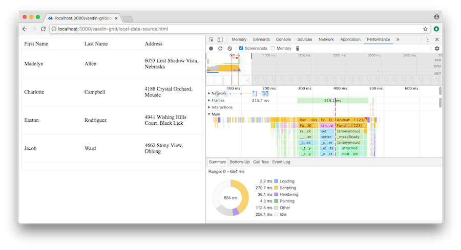

Data grids are some of the most commonly used components in business apps. But at the same time they are some of the most complex components to implement. There are many aspects that the component needs to get right – customizability, performance, usability, accessibility, and cross-platform support.
In this comparison we wanted to put some of the most popular data grids head to head and find out which is best, especially when it comes to performance.
We limited ourselves to components that are not tied to a specific framework and can be used anywhere. The grids we chose to examine are Vaadin Grid, bwt-datatable, ag-Grid, and jQuery DataTables.
Vaadin Grid is an open source, Apache 2 licensed, component distributed as a stand-alone Web Component built with Polymer. To get started, you need to import the component definition and include a polyfill for browsers that do not yet include native support.
[[item.address.street]], [[item.address.city]]
You can install Vaadin Grid with Bower:$ bower install --save vaadin-grid
Once installed, you import vaadin-grid into your code with an HTML import:<link rel="import" href="../bower_components/vaadin-grid/vaadin-grid.html">
Vaadin Grid is configured through a declarative API. In the following example, we bind the grid to the people-array, and configure the column mapping with vaadin-grid-column tags. Vaadin Grid iterates over the array and binds the current row to item, so templates can use it to customize how data are shown.
The setup of Vaadin Grid is straightforward and well documented. The table can be populated by passing in data either as an array for smaller datasets or as a callback function for paging large datasets.
Vaadin Grid has examples for customizing the look and feel with CSS variables. It includes themes for Material Design, Valo and other easily extendable presets.
Vaadin Grid handles large amounts of data easily through deferred data loading and recycling DOM elements when scrolling. It includes support for sorting, filtering, end user column reordering, and expandable details rows. Vaadin Grid can be navigated with the keyboard and supports screen readers.
bwt-datatable is a maintained fork of a popular Polymer-based material design data table paper-datatable.
[[value.street]], [[value.city]]
You can install bwt-datatable with Bower:
$ bower install --save bwt-datatableOnce installed, you import bwt-datatable into your code with an HTML import:
<link rel="import" href="../bower_components/bwt-datatable/bwt-datatable.html">bwt-datatable includes two different components: paper-datatable and paper-datatable-card. The card version should be used for tables with a dynamic number of rows.
Setting up bwt-datatable is intuitive using the declarative API. Here, we bind the table to the people-array and define the columns we want. The column defines the header text and the property in the data object that should be bound to that column. Optionally, you can supply a template to customize the cell content. There are no templates for headers.
bwt-datatable uses a manually paged approach instead of infinite scrolling like Vaadin Grid. This makes it slower to go through larger datasets. bwt-datatable has good support for handling selection and editing content. It is more limited when it comes to accessibility – it does not support keyboard navigation for instance. bwt-datatable has a unique column pivoting feature for narrow viewports. This can be good or confusing, depending on what you are looking for.
ag-Grid is the only primarily commercial component in the comparison. There is an open source, free, version and a commercial version starting at 795GBP/developer. ag-Grid differs from the other grids in that it offers APIs for many frameworks like Angular, React, and Vue in addition to the plain JavaScript and Web Component APIs. In this comparison, we'll look at the Web Component API.
You can install ag-grid with Bower:
$ bower install --save ag-gridOnce it's installed, you include ag-Grid with a <src> tag:
<script src="../bower_components/ag-grid/dist/ag-grid.js">Finally, you need to register the Web Component:
agGrid.initialiseAgGridWithWebComponents();Even though ag-Grid is a Web Component, it does not have a declarative API. Instead, it is initialized programmatically in JavaScript.
ag-Grid is the most feature rich of the compared data tables, but it looks and feels quite old. It has good support for large data sets, end user sorting, filtering, column reordering, and keyboard navigation.
jQuery DataTables is probably the best known JavaScript data table out there. It has been around since 2007 and is widely used in projects. DataTables has a ton of functionality and several add+ons for things like scrolling and keyboard navigation. Since the use of jQuery is winding down and jQuery DataTables is a fairly old project already, many developers are looking for an alternative or replacement for it. Hopefully, this comparison will help those looking for the best alternative to jQuery DataTables.
| First Name | Last Name | Address |
You can install DataTables through bower:
$ bower install --save datatables.net
$ bower install --save datatables.net-dt
Then, load the script and CSS files in the <head> of your document
<script src="../bower_components/datatables.net/js/jquery.dataTables.min.js"></script>
<link rel="stylesheet" href="../bower_components/datatables.net-dt/css/jquery.dataTables.min.css">
Finally, find your <table> element and initialize it:
$(document).ready( function () {
$('#table_id').DataTable();
} );DataTables can enhance an existing <table> element's content or generate the rows based on JSON data and column definitions. The table setup is programmatic, using jQuery. Many features are split into separate extensions that require you to install and include separate JavaScript and CSS files. jQuery DataTables relies on jQuery, which is becoming less common in frontend projects these days, meaning that you need to load jQuery just to use one single component. Fortunately, jQuery is a fairly small library.
While jQuery DataTables supports server side processing, it requires the server to comply to it's own processing rules instead of allowing developers to customize the data fetching. Because of this, DataTables wasn't able to directly use the randomuser.me demo data API like all other grids, rather it needed a proxy to convert the calls to a format DataTables understands.
DataTables loads fast, but looks and feels quite outdated. By default it uses manual paging, but an extension can be used to enable automatic paging on scrolling.
The data grids were tested on three different aspects:
The measured performance metrics are: time to first paint (ms), time to all rows visible (ms), and amount of transferred data. The tests were run with Chrome DevTools, using the performance tab and looking at the gathered screenshots:
Vaadin Grid and jQuery DataTables were the fastest grids to display all rows. ag-Grid was very close as well, while bwt-datatables fell behind quite a bit.
Vaadin Grid and jQuery DataTables also transferred the least amount of dataT. ag-Grid and bwt-datatables were about 70% larger.
Taking everything – developer and end user experience, features, and performance – into account, the winner of our comparison is Vaadin-grid. It's free and open source, has one of the biggest feature sets, and performed fast both with local and remote data sources.
The results for each grid are summarized in the grid below:
[[item.vaadin]]
Are we missing a grid that should be here? Did we make a mistake somewhere? File issues and contribute with pull requests on GitHub [link here]